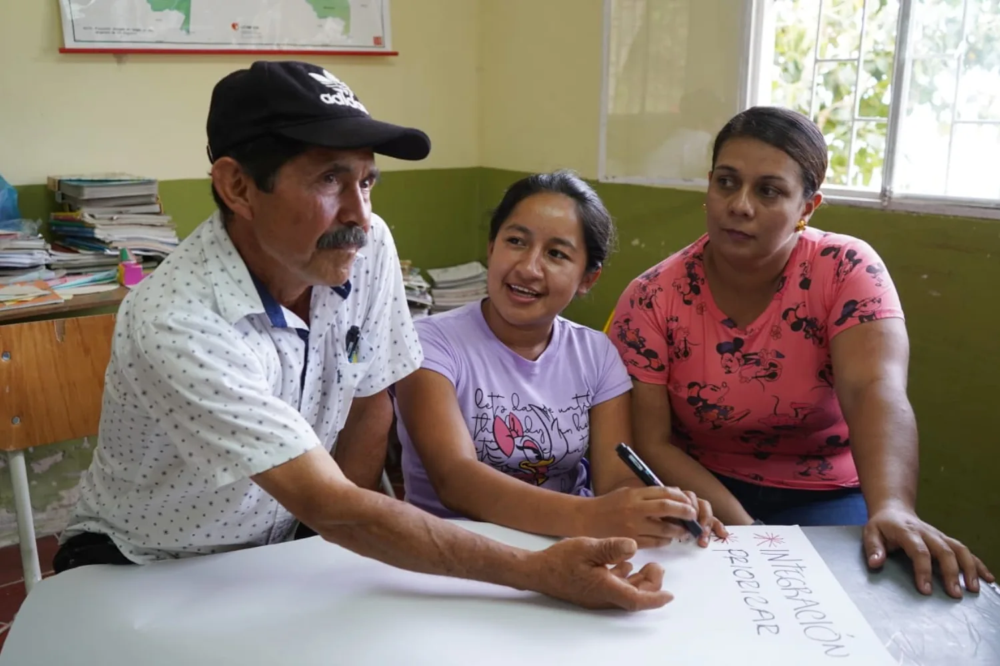

Conecta comunidades
Acerca a las personas a la educación, la salud, el trabajo y otros servicios esenciales.
El programa
Caminos del Tigre reúne las necesidades de los territorios, las analiza y establece prioridades que permitan preparar y gestionar posibles intervenciones.

Información esencial
Busca mejorar la conectividad de Colombia, con especial atención a las vías rurales y a las conexiones entre comunidades, municipios y regiones.
A comunidades rurales, familias, estudiantes, productores, comerciantes y personas que necesitan desplazarse entre territorios.
Los actores que autorice el programa, como organizaciones comunitarias, entidades territoriales, gremios y otros canales institucionales habilitados.
Acerca a las personas a la educación, la salud, el trabajo y otros servicios esenciales.
Reúne información de los caminos para entender su importancia y lo que representan para cada región.
Analiza las necesidades y establece prioridades para gestionar posibles intervenciones.
Siguiente paso
Revisa las etapas que sigue una necesidad vial después de su registro.